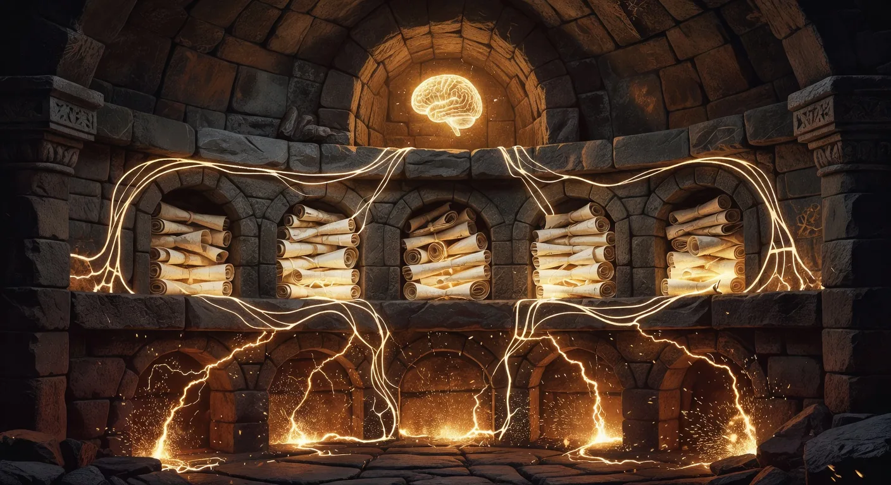
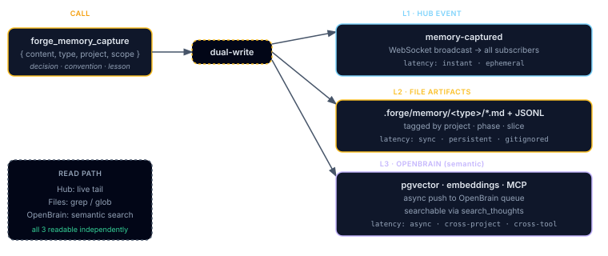
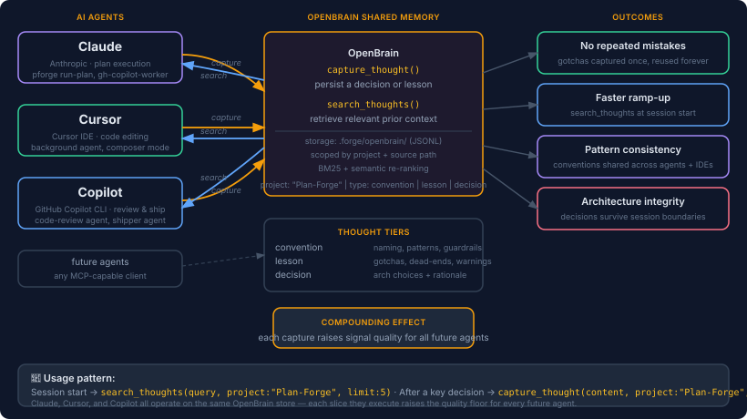

Memory Architecture
Three tiers, one capture path. How Plan Forge remembers what it learned, across slices, across sessions, across plans.
- L1 (Hub), fast, in-process, like RAM. Powers the live dashboard.
- L2 (Files), local
.forge/*.jsonlfiles in your repo. Your project's permanent notebook. - L3 (OpenBrain), a shared semantic database. Searchable across projects, agents, and machines.
captureMemory() call writes to all three. If any tier fails, the others still succeed, nothing blocks your code.
And around those three tiers, v3.x added four pieces of craftsmanship: Hallmark stamps every record with a provenance envelope (hallmark/v1) so drift is detectable; Anvil hardens the L2→L3 doorway with a dead-letter queue and capability handshake so a network blip never loses a memory; Lattice sits alongside as a code-graph index the agent can query ("who calls this function?"); and forge_sync_memories pushes decisions and lessons up into Copilot's own Memory store so the next IDE session sees them automatically. The plain-English tour with numbers is in Chapter 22 — How the Shop Remembers.
v2.35.1–v2.36.0 release window.
forge_sync_memories)? They're covered in plain English in the next chapter, Chapter 22 — How the Shop Remembers. That chapter explains what we layered on top of the L1/L2/L3 tiers described here, and shows the cost/quality numbers proving why a cheaper model can now do work that used to require the expensive one.
The Three Tiers

Plan Forge separates volatile working memory from durable project memory from cross-project semantic memory. Every captureMemory call writes to all three in a single best-effort pass, no tier blocks the others, no failure aborts the calling tool.
| Tier | Storage | Lifetime | Read API | What v3 added |
|---|---|---|---|---|
| L1, Hub | EventEmitter in hub.mjs + .forge/hub-events.jsonl | Process lifetime + replay file | WebSocket subscribers, forge_watch | Unchanged. Same hub, same broadcast. |
| L2, Files | .forge/*.jsonl (memory-captures, gotchas, lessons, decisions, patterns…) | Repository lifetime | forge_memory_report, manual file reads | Hallmark stamps every new record (_v:1) so drift is detectable. |
| L3, OpenBrain | pgvector via .forge/openbrain-queue.jsonl drain | Cross-project, cross-session | search_thoughts, semantic recall | Anvil hardens the doorway (DLQ + capability handshake + boot drain). |
| + Lattice | .forge/lattice/{chunks,edges}.jsonl | Repository lifetime (rebuildable) | latticeQuery, latticeCallers, latticeBlast | Parallel axis, a code-graph the agent queries alongside memory. |
| ↑ Copilot Memory | Copilot's own Memory store (IDE) | Cross-session, IDE-wide | Copilot reads automatically | forge_sync_memories pushes decisions/lessons upward (additive, hash-deduped). |
forge_sync_memories fit on top of L1/L2/L3, see Chapter 22 § How the New Pieces Fit the Old Tiers.
Unified Memory Across Agents
OpenBrain isn't just a per-session scratch pad, it's a shared memory layer that compounds across every AI agent, every IDE, and every session. When Claude captures a gotcha in Slice 2, Copilot reads it in Slice 5 without any manual handoff. When Cursor records a naming convention, Claude's next run already knows it.

How it works — 4 steps
- Capture, any agent calls
capture_thought({ content, project, source, type })after a key decision. The record is scoped to your project and the originating slice path. - Fan-out, Plan Forge's L2 + L3 capture path appends the record locally (
.forge/openbrain-queue.jsonl) and drains it to OpenBrain asynchronously. - Retrieve, at the start of any slice (or any session), agents call
search_thoughts({ query, project, limit })to surface relevant prior decisions before writing a single line of code. - Compound, each new capture raises the signal quality for every future agent. A convention captured in Phase 1 is still enforced in Phase 40, by a different agent, in a different IDE.
Agent integration table
| Agent | Capture path | Retrieve path | Notes |
|---|---|---|---|
| Claude | capture_thought MCP tool |
search_thoughts MCP tool |
Full read/write; memory-preload event on plan start |
| Cursor | capture_thought MCP tool |
search_thoughts MCP tool |
Background agent and composer mode both supported |
| Copilot | capture_thought MCP tool |
search_thoughts MCP tool |
Lifecycle hooks (SessionStart) inject prior context automatically |
| Future agents | Any MCP client | Any MCP client | MCP-capable clients connect to the same store |
Concepts in this section were first explored in the blog posts One Framework, Seven AI Agents and From WhatsApp to Shipped PR: The Unified System.
Capture Flow
One write, three destinations. The diagram below traces a single captureMemory({tool, type, body}) call from any tool through the dual-write fan-out:
┌──────────────────────────────────────────────────────────────────────┐
│ Any forge tool, watcher, hook, or skill │
│ └─► captureMemory({ tool, type, body, source }) │
└──────────────────────────────────┬───────────────────────────────────┘
│
┌──────────────────────────┼──────────────────────────┐
▼ ▼ ▼
┌──────────────────┐ ┌─────────────────────┐ ┌────────────────────┐
│ L1, Hub │ │ L2, Files │ │ L3, OpenBrain │
│ │ │ │ │ │
│ EventEmitter │ │ Append _v:1 record │ │ Append to │
│ broadcast │ │ to .forge/ │ │ openbrain- │
│ │ │ memory-captures │ │ queue.jsonl │
│ → WebSocket │ │ .jsonl │ │ │
│ subscribers │ │ │ │ Drain worker: │
│ │ │ Tag-route to │ │ batch → POST │
│ → hub-events │ │ gotchas.jsonl, │ │ → pgvector │
│ .jsonl replay │ │ lessons.jsonl, │ │ │
│ │ │ decisions.jsonl… │ │ Failures → DLQ │
│ Real-time UI │ │ │ │ .jsonl │
└──────────────────┘ └─────────────────────┘ └────────────────────┘
│
▼
┌──────────────────────┐
│ search_thoughts / │
│ buildPlanBootContext │
│ → preload on plan- │
│ start (memory- │
│ preload event) │
└──────────────────────┘Every step is wrapped in try/catch. A failed L3 enqueue never blocks the L2 file append; a corrupt L2 file never blocks the L1 broadcast. This is the dual-write pattern: best-effort fan-out with structured telemetry on each branch.
L1 — The Hub
The hub is a single EventEmitter instance in pforge-mcp/hub.mjs. Every event, slice start, model choice, tool result, memory capture, flows through it:
- Subscribers, WebSocket clients (the dashboard), the watcher worker, the OpenBrain drain worker, anything listening for
memory-captured - Replay file, every event also appends to
.forge/hub-events.jsonlso a fresh dashboard can rebuild state on connect - Worker capability probe, workers announce which event types they handle so the hub can drop unhandled events early instead of fanning out garbage
L2 — The Files
Every memory file lives under .forge/ as line-delimited JSON. Each record carries a schema version field _v so the format can evolve without breaking older data:
| File | Contents |
|---|---|
| memory-captures.jsonl | Raw capture log, every captureMemory call |
| gotchas.jsonl | Type-routed: type: "gotcha" |
| lessons.jsonl | Type-routed: type: "lesson" |
| decisions.jsonl | Type-routed: type: "decision" |
| patterns.jsonl | Type-routed: type: "pattern" |
| conventions.jsonl | Type-routed: type: "convention" |
| openbrain-queue.jsonl | Pending L3 deliveries (drain worker source) |
| openbrain-dlq.jsonl | Permanently failed L3 deliveries |
| hub-events.jsonl | L1 replay log |
The Memory tab in the dashboard (new in v2.36.0) renders this exact set as a live KPI strip + per-file breakdown, see the dashboard chapter. The data comes from forge_memory_report, also exposed at GET /api/memory/report.
L3 — OpenBrain Bridge
OpenBrain is the cross-project semantic store (pgvector + thought metadata). Plan Forge never writes to it directly during a tool call, that would couple every tool's latency to the OpenBrain endpoint. Instead, the path goes through the Anvil boundary (added in v3.x): a small piece of code that owns delivery, capability negotiation, and failure recovery so the calling tool only ever talks to a local queue.
captureMemoryappends one line to.forge/openbrain-queue.jsonl(microseconds, local I/O)- The Anvil drain worker wakes on a timer or hub event, negotiates capabilities with the L3 endpoint, batches pending lines, and POSTs them to OpenBrain
- Successes are removed from the queue. Failures retry up to N times, then land in
openbrain-dlq.jsonl, the dead-letter queue that the next boot drains automatically - A
drain-trendrolling window inforge_memory_reportexposes pass/fail/deferred counts so the Memory tab can flag a stuck pipeline
captureMemory never fails because of L3. When you later set openbrain.endpoint in .forge.json, the next drain pass ships the backlog.
L3 → L1 Preload
When forge_run_plan emits run-started, the orchestrator calls buildPlanBootContext(plan, projectName) to derive a small set of semantic queries the agent should pre-fetch from L3 before slice 1:
- plan-history hint, keyed off the plan name (
plan Phase-1-AUTH), surfaces prior decisions on the same plan - slice-keyword hints, derived from slice titles via the keyword search map (e.g. "database" →
database migration patterns, "api" →API endpoint design patterns), deduped and capped at 8
The hints are emitted as a memory-preload hub event. Any agent runtime listening (Copilot, Claude Code, Cursor) can resolve the hints via search_thoughts and seed its working context, eliminating the cold-start "what did we learn last time" gap.
Watcher → Memory
The file watcher (chapter 6 — Watcher tab) doesn't just emit FS events, it drives capture. When a file change matches a watcher rule, the watcher composes a buildWatcherSearchPrompt payload and pushes it through the same captureMemory path so the change becomes a first-class L2 record and an L3 query.
This closes the loop where edits made between plan slices used to vanish from memory. Now the watcher feeds L1/L2/L3 just like any tool would.
Source Attribution
Every capture carries a source field with a strict format: <tool> or <tool>/<subsystem>. validateSourceFormat rejects anything else. This means the Memory tab's "by tool" breakdown is always accurate, no untagged drift.
// Valid
"forge_run_plan"
"forge_run_plan/slice-executor"
"watcher/fs-rule"
"hook/pre-deploy"
// Rejected (logged, capture still proceeds, source replaced with "unknown")
"My Tool"
"forge_run_plan / slice-executor" // spaces around slash
""Migration: pforge migrate-memory
Schema changes (the _v field bumps) are handled by the migration switch in pforge.ps1 / pforge.sh:
# Inspect what would migrate (no writes)
pforge migrate-memory --dry-run
# Apply: rewrites every .forge/*.jsonl record to the latest _v
pforge migrate-memory
# Migration is idempotent, running twice is a no-opOriginals are backed up to .forge/.migration-backup-<timestamp>/ before any rewrite.
Telemetry & Reporting
Three helpers in memory.mjs drive everything the dashboard shows:
buildCaptureTelemetry(), totals, deduped count, by-tool and by-type histograms (cosine-similarity dedup at write time)buildCacheEntry()+isCacheEntryFresh(), search-result cache with TTL stamping (stampThoughtExpiry) and read-time filtering (filterUnexpiredThoughts)buildMemoryReport(projectDir), assembles the full payload behindforge_memory_report//api/memory/report: file inventory, version distribution, queue depth, drain trend, orphan detection
Further Reading
pforge-mcp/memory.mjs, every helper above, with inline section markers (─── G3.x ───,─── GX.x ───)- MEMORY-ARCHITECTURE.md on GitHub, original audit document with gap IDs cross-referenced to PRs
- Dashboard → Memory tab, the live view of everything in this chapter
forge_memory_report, the underlying tool (chapter 10)
📄 v2.36.0 changelog: View CHANGELOG on GitHub.